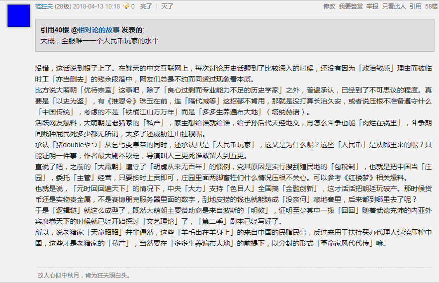
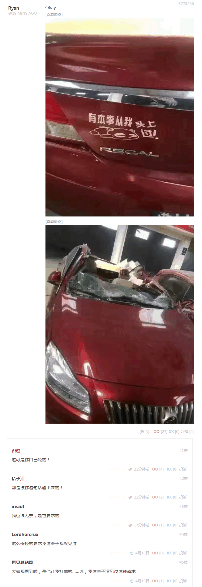
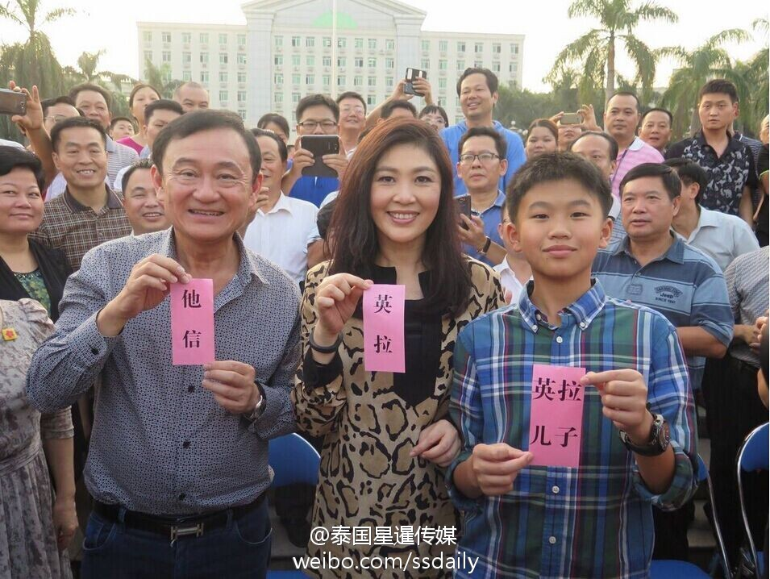

回复
谢邀。
刚在虎扑步行街（又称「绿帽一条街」「美食一条街」）回复了个类似话题，这边知乎人工智障算法果然应景，看来知乎站方公开表态（在九省通衢活跃账号措辞中采用「黑手高悬霸主鞭」影射）之后，临时工团队也努力多了嘛。
那边的帖子是这个：
朱元璋乞丐变皇帝，作为小说主角，算是开挂吗，称得上龙傲天吗？
回复截图是这个：

全服唯一人民币玩家「猪doubleやつ」
回复内容引用如下：
范狂夫回复相对论的故事
大概，全服唯一一个人民币玩家的水平
没错，这话说到根子上了。在繁荣的中文互联网上，每次讨论历史话题到了比较深入的时候，还没有因为「政治敏感」理由而被临时工「亦当删去」的残余段落中，网友们总是不约而同透过现象看本质。
比方说大萌朝「优待宗室」这事吧，除了「良心过剩而专业能力不足的历史学家」之外，普遍承认，已经到了不可思议的程度。真要是「以史为鉴」，有《推恩令》珠玉在前，连「隔代减等」这招都不肯用，那就是没打算长治久安，或者说压根不准备遵守什么「中国传统」，考虑的不是「铁桶江山万万年」而是「多多生养遍布大地」（塔纳赫语）。
活跃网友爆料，大萌朝是老猪家的「私产」，家主想给谁就给谁，给子孙后代天经地义，再怎么斗争也能「肉烂在锅里」，斗争期间贱种屁民死多少都无所谓，太多了还威胁江山社稷呢。
承认「猪doubleやつ」从乞丐变皇帝的同时，还承认其是「人民币玩家」，这又是为什么呢？这些「人民币」是从哪里来的呢？只能证明一件事，作者最大剧本钦定，导演叫人三更死谁敢留人到五更。
直说了吧，之前的「大鼋朝」遵守了「胡虏从来无百年」的惯例，究其原因是实行搜刮殖民地的「包税制」，也就是把中国当「庄园」，委托「主管」经营，只要按时上贡即可，庄园里面两脚畜牲们什么情况压根不关心。可以参考《红楼梦》相关爆料。
也就是说，「元时回回遍天下」的情况下，中央「大力」支持「色目人」全国搞「金融创新」，这才活活把朝廷玩破产。那时候货币还是实物贵金属，不是赛博朋克服务器里面的数字，刮地皮捞的钱也就能铸成「没奈何」藏地窖里，后来都到哪里去了呢？
于是「逻辑链」就这么成型了，既然大萌朝主要赞助商是来自波斯的「明教」，证明至少其中一拨「回回」随着武德充沛的内亚外宾席卷天下的时候就已经开始探讨「文艺理论」了，「第二季」剧本已经写好了。
所以，说老猪家「天命昭昭」并非偶然，这些「羊毛出在羊身上」的来自中国的民脂民膏，反过来用于扶持买办代理人继续压榨中国，这些才是老猪家的「私产」，当然要在「多多生养遍布大地」的前提下，以分封的形式「革命家风代代传」嘛。
总之，新时代中国特色社会主义大好形势下，繁荣的中文互联网上，应景出现「曰若稽古」讨论大萌朝天命昭昭历程，肯定体现了现实中政治和意识形态斗争新动向。
把网友使用黑话进行「汉译汉」就是：前明踩着前元的尸体站起来，后明也会踩着后元的尸体站起来，前元亡于色目人金融创新，后元……【管理员警告：咄！政治敏感！呔！亦当删去！】
补充，刚看见九省通衢活跃的色目网友应景爆料：

「我们色目人看呐，这后元朝怕是要完」
不知道在九省通衢活跃网友心目中，「胡虏从来无百年」到底是从1921年开始算呢，还是从1949年开始算，毕竟1911年已经过去了嘛。
再补充，就用@南客居士的原话「现在可以肯定的说，“通俄门”调查压根不是什么民主党“贼心不死”，而就是共和党及其背后金主控制特朗普的“紧箍咒”。你玩的太出格就念他一念，还能怎么样？」解释。
包括但不限于朱元璋之流，啥鸡巴「十八代贫农出身」钦定主角龙傲天，都是作者编剧导演豢养的「狗」，繁荣的中文互联网上活跃的色目帐号动辄叫嚣着「狗链子拴紧点，老实」，属于「不怕我说就怕你说」型不打自招。
这种情况下没有负面新闻的，那才是「真·膝盖生根头顶绿得发黑贱到骨子里去了的光明会共济会奴才」，「一切行动听指挥」，「理解的要执行，不理解的也要执行，在执行中加强理解」，「听色目人的话跟色目人走，坚决做色目人一条狗，色目人让咬谁就咬谁，教咬几口咬几口」。
换句话说，「史籍」当中的「十八代贫农出身全家死光光当过乞丐与和尚」的钦定主角龙傲天，没准就是「哪儿来的贵种」多多生养遍布大地，实在养活不了就杜鹃下蛋塞野种，正好碰上色目「作者编剧导演」看地皮已经刮得差不多了，讨论「第二季」演员表的时候想起来的。
顺便，转贴九省通衢活跃色目网友在微博发表之后又出口转内销转贴回煎蛋的某公开新闻配图：

广东省梅州市客家人「英拉儿子」
希望知乎色目用户能踊跃发言，帮助我等不明真相的围观群众理解什么是「狗链子拴紧点，老实」，也希望@南客居士等「历史学探索者」继续爆料川普大统领脖子上的狗链子到底拴得紧不紧。